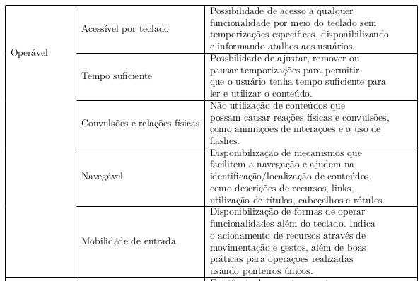

2.2 Princípios
As diretrizes e os critérios de sucesso estão organizados em torno dos quatro princípios seguintes, que estabelecem as bases necessárias para que qualquer pessoa possa acessar e utilizar o conteúdo da Web.
Percepção
Diz respeito à importância de avaliar se os conteúdos são perceptíveis para todos os usuários.

Em específico para atender e testar as percepções que afetam mais o público que possui algum tipo/grau de deficiência visual, foram adotados três critérios principais:
- Contraste mínimo de cores: Consiste em garantir que haja um contraste suficiente entre os elementos visuais, como texto e fundo, para torná-los legíveis para pessoas com baixa visão ou dificuldades de leitura;
- Alternativas em texto: Visam fornecer alternativas textuais, como descrições de imagens, transcrições de áudio ou legendas em vídeos, para que pessoas com deficiência visual possam compreender o conteúdo, e
- Decoração invisível: Pretende garantir que conteúdos meramente decorativos e formatações visuais sejam implementados de forma a serem ignorados pelas tecnologias assistivas;
Operação
O princípio envolve garantir que sejam fornecidos métodos de navegação claros e consistentes, permitindo que os usuários controlem a reprodução de mídia e interajam por meio de diferentes dispositivos de entrada.

Em específico para atender e testar as percepções que afetam mais o público que possui algum tipo/grau de deficiência visual, foram adotados três principais pontos de observação:
- Localização: Onde qualquer usuário deve poder orientar-se facilmente em qualquer parte da tela, em qualquer tela;
- Tamanho das áreas clicáveis: De forma que seja possível assegurar que tenham tamanho suficiente para serem facilmente selecionadas por usuários que usem tecnologias assistivas, como teclados auxiliares ou dispositivos apontadores alternativos, e
- Cabeçalhos da sessão: Onde todas as sessões utilizadas para dividir as telas devem devem possuir títulos claros, com níveis de hierarquia bem definidos, facilitando a identificação das áreas;
Compreensão
O princípio da compreensão destaca a importância de tornar os conteúdos compreensíveis para todos os usuários. Isso inclui diretrizes relacionadas à linguagem simples e clara; à organização lógica do conteúdo; à consistência na apresentação de informações, e ao fornecimento de orientações claras e intuitivas para a navegação e a interação.
As diretrizes e critérios de sucesso relacionados a esse princípio podem ser resumidos através do quadro:

Em específico para atender e testar as percepções que afetam mais o público que possui algum tipo/grau de deficiência visual, foram selecionados os critérios:
- Rótulos e instruções: Para que todos os rótulos descrevam de forma clara e não ambígua a finalidade dos campos de formulário;
- Navegação consistente: Permite que os usuários desenvolvam uma compreensão intuitiva da interface e naveguem com confiança através de menus, elementos e recursos localizados em locais consistentes em todas as páginas, e
- Sugestão de erro: Garante que caso hajam erros, os mesmos sejam identificados e descritos para o usuário, de forma que este consiga entender e contornar o erro.
Robustez
Enfatiza a necessidade de desenvolver conteúdos que sejam compatíveis com diferentes tecnologias e navegadores, garantindo que a acessibilidade seja mantida, e tudo possa ser interpretado de forma confiável por uma ampla variedade de ferramentas.
Em específico para atender e testar as percepções que afetam mais o público que possui algum tipo/grau de deficiência visual, foram selecionados os critérios:
- Mensagens de status: Para que conteúdos sejam implementados para fornecer informações aos usuários comunicando o status de uma ação ou processo em uma interface sem dar foco, e
- Descrição dos atributos dos componentes (ou nome, função, valor): Para garantir que todos os componentes de interface, incluindo nome, estado, função, propriedades e valores, possam ser descritos para os usuários por meio de tecnologias assistivas.
Todas as referências utlilizadas podem ser encontradas no artigo publicado.